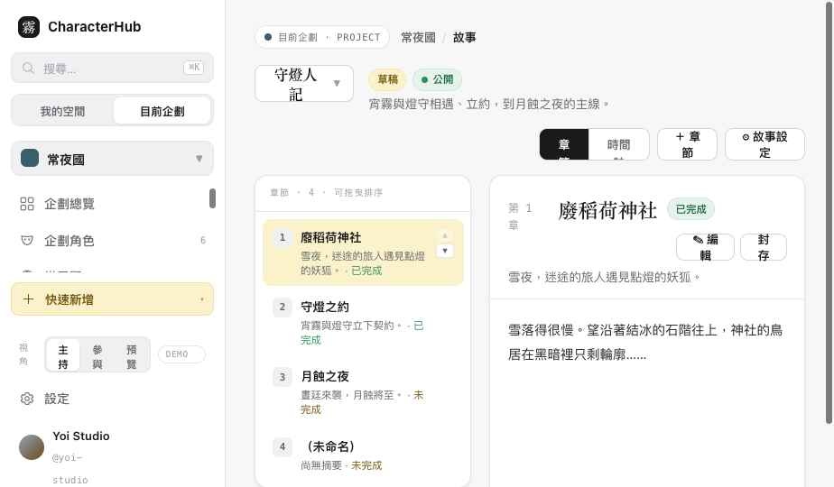
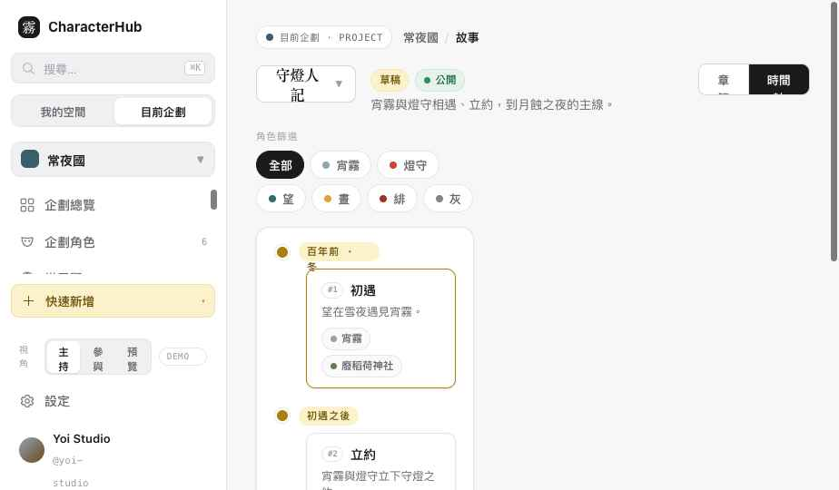
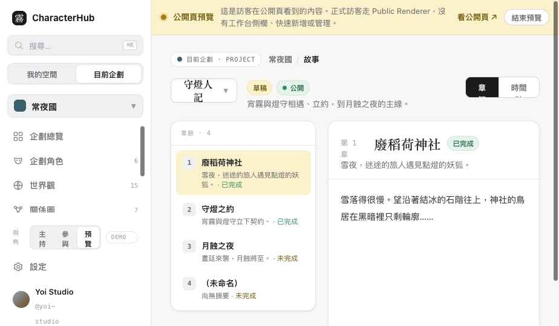

CharacterHub · Slice 4A · Story
Slice 4A 驗收
故事頁完成。同一批故事資料支援章節檢視與時間軸檢視兩種呈現；StoryEvent 與世界觀 Event 明確區分，可經 EntityLink 互相關聯；動作權限、公開裁切、四＋態空狀態齊備。
story.html
章節 ↔ 時間軸
所有儲存為 Demo only
01
可點擊頁面
Clickable
切側欄左下「視角」可看 主持／參與／公開預覽 差異。
02
畫面
Screens

章節檢視：故事選擇器、章節大綱（編號／狀態／排序控制）、章節內容；右側關聯面板。

時間軸檢視：timeLabel 分組、文字順序 #編號、同一時間點多事件標註、角色篩選、EntityLink chips。

公開預覽：橫幅；只顯示公開故事／章節／事件；無新增／編輯／排序。
切換方式
頁首「章節／時間軸」Segmented 切換，兩者讀同一批 Story/Chapter/StoryEvent；時間軸另有文字順序與清單，不只靠垂直線位置。
03
資料分區
Story · Chapter · StoryEvent
Story
- projectId · title · summary
- status（draft/completed/archived）
- visibility · coverAssetId?
Chapter
- storyId · title · summary
- content · sortOrder
- status
StoryEvent
- projectId · storyId? · chapterId?
- title · description
- timeLabel（模糊時間文字）
- sortKey（排序，非真實日期）
- visibility
StoryEvent ≠ WorldEntry Event
StoryEvent＝故事中的劇情節點／敘事事件；WorldEntry Event＝世界觀中的歷史／設定事實。兩者可用 EntityLink 互相關聯，但不是同一筆資料。
04
EntityLink 與公開裁切
Links
Story／Chapter／StoryEvent 可關聯 Character／WorldEntry／其他 StoryEvent／Asset。右側面板顯示名稱、頭像、類型與關係標籤，點角色 chip 進角色詳情。公開預覽同時檢查關聯本身與目標實體可見性——私人角色／條目的關聯整筆隱藏（不洩漏名稱頭像）；私人 StoryEvent（如「某個夢」）與「僅成員」事件（月蝕停戰）在預覽中不顯示。已驗證：st1 事件 4→3、私人故事在預覽消失。
05
動作權限
Action permissions
按鈕依動作權限概念顯示，非 fixture 角色名：
| 動作 | Owner/Host | Member（本原型政策） | Visitor 預覽 |
|---|
| story:create / update / archive | ✓ | ✕ | ✕ |
| chapter:create / update | ✓ | ✓ | ✕ |
| chapter:reorder / archive | ✓ | ✕ | ✕ |
| storyEvent:create / update | ✓ | ✓ | ✕ |
| storyEvent:delete | ✓ | ✕ | ✕ |
Owner/Host/Member 僅為 fixture 身分；正式 UI 依 viewerPermissions 的動作權限判斷，不寫死。
06
狀態設計
States
1Story 模組未啟用（plug 圖示，commset）
2已啟用但沒有 Story（CTA 新增故事）
3Story 存在但沒有 Chapter（大綱空狀態 + CTA）
4Chapter 沒有內容（「點編輯開始撰寫」）
5載入失敗（可重試）
6無權限（Forbidden）
7Story archived（唯讀橫幅）
8Visitor Preview 沒有公開內容
07
響應式
Responsive
桌機三欄（故事選擇＋章節大綱／中間內容或時間軸／右側關聯）。≤1199px 收成兩欄（隱右側關聯）；≤767px 單欄：故事列表 → 章節大綱 → 章節詳情，時間軸改事件清單＋篩選。複雜拖曳建議桌機，但章節有上移／下移按鈕與鍵盤排序（方向鍵）。請在實機 360／390／768／1024／1440px 確認。
08
修改檔案
Files
| 檔案 | 變更 |
|---|
| assets/data.js | Story／Chapter／StoryEvent fixtures＋helper（storiesOf/chaptersOf/eventsOf/linksOfSource…）；ACTION_GRANTS 補 story/chapter/storyEvent 動作；StoryEvent↔Character/WorldEntry 的 EntityLink。 |
| assets/story.css | 故事三欄、章節大綱、排序控制、時間軸、關聯面板、響應式。 |
| pages/story.html | 章節／時間軸雙檢視、故事選擇器、四＋態空狀態、動作權限、公開裁切、鍵盤排序。 |
| index.html | 故事標記為已重設計，加 Slice 4A 報告連結。 |
09
資料契約狀態
Contract status
DOMAIN CONTRACT READY · Story / Chapter / StoryEvent
UI 與欄位概念已確定（見 §03）。timeLabel＝創作者看到的模糊時間文字、sortKey＝排序（非真實日期）；同一 sortKey 以 sortOrder 為第二排序。注意：與 WorldEntry／Relationship 不同，Story 沒有現成本地 API。
API NOT IMPLEMENTED · Story
本地正式 Story API、D1 CRUD、Repository 與 roundtrip 尚未完成。本輪僅 Demo 互動。
CONTRACT · status ≠ visibility
status: draft / completed / archived；visibility: private / members / public。completed ≠ published，public 也不代表 completed——兩軸獨立。
CONTRACT · 公開 effectiveVisibility
公開顯示 StoryEvent 需同時滿足：Story 可見 ∧ Chapter 可見 ∧ StoryEvent 可見 ∧ EntityLink 可見 ∧ target 可見。任何祖先或目標為私人時，不洩漏內容／名稱／頭像／數量。
DATA GAP · StoryEvent 前置／後續
先後關聯走 EntityLink（relationType: precedes / follows / causes / depends_on），不內嵌 id 陣列；正式實作需防先後循環。
DATA GAP · coverAssetId / Asset 關聯
Story 封面與事件配圖需 Asset／AssetLink（Slice 4B Gallery）。
10
Demo-only 操作
Demo interaction only
demo新增故事／章節／事件、編輯、封存（含確認）
demo章節拖曳排序、上移／下移按鈕、鍵盤方向鍵排序（提示為 Demo）
demo故事切換、章節／時間軸切換、角色篩選＝真實 UI-only 狀態
11
尚未完成的 UX
Open issues
- 章節拖曳排序為視覺示意，未真正寫回 sortOrder（待 persistence）。
- StoryEvent 前置／後續事件鏈尚未在 UI 呈現。
- 章節內容編輯器為 Demo（無富文字）。
- 時間範圍／世界觀條目篩選僅角色篩選已做，其餘待補。
- 故事封面、事件配圖待 Gallery（Slice 4B）。